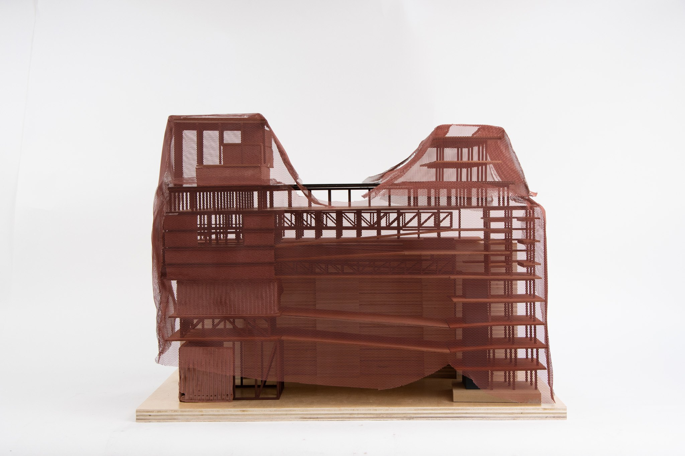
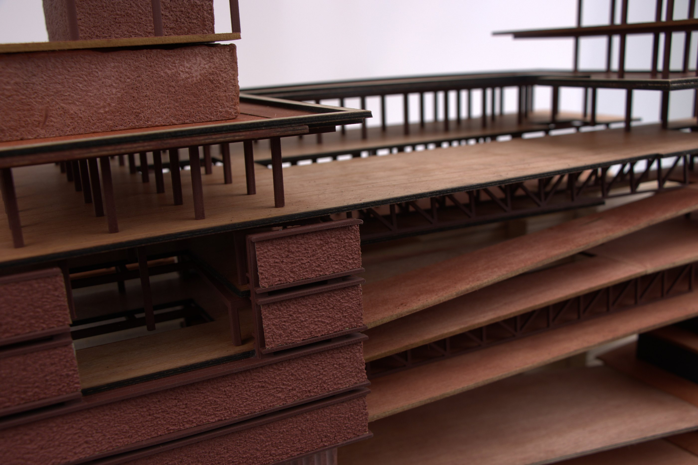
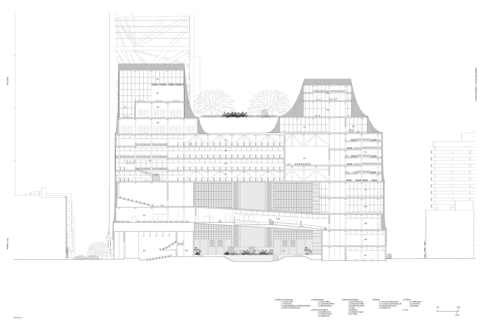
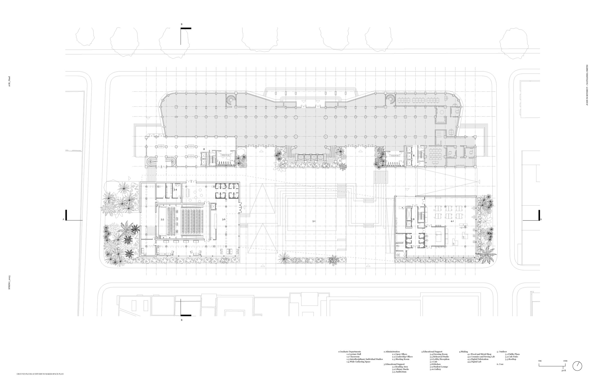
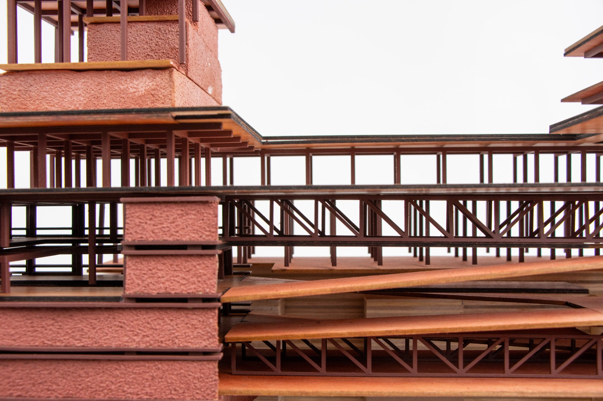
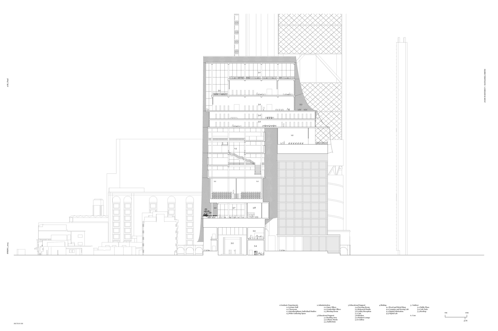
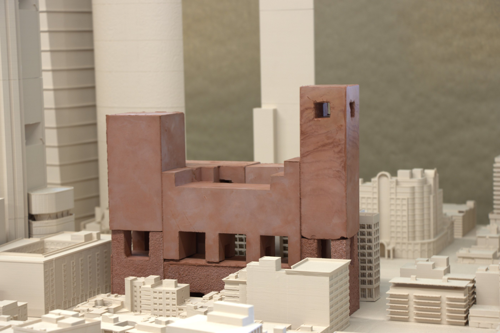

Design School in Mexico City
An addition to the IMSS headquarters, Mexico's social security bureau, in Mexico City: a design school that plugs into the existing office building without major changes to its structure. On our studio trip we read the city as a palimpsest, built in layers, with new buildings and materials laid directly against the ones before them. The proposal continues that reading. Studios, classrooms, a gallery, a café and a library stack as blocks on one another and on the IMSS building, a public plaza opens at street level, and a mesh facade drapes over the whole: one more layer of the city.
*Made with Nate Smith






